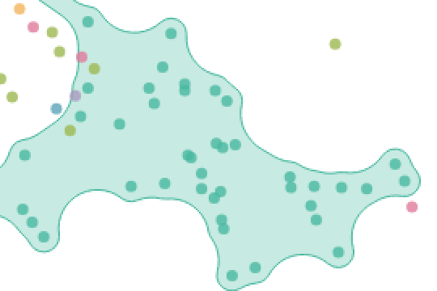
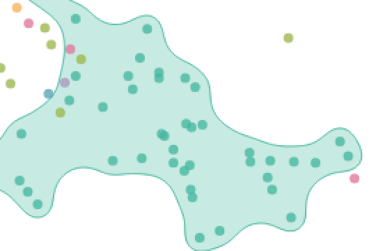
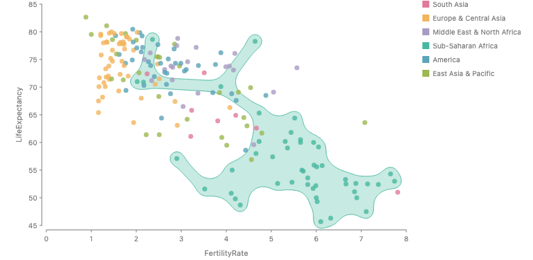
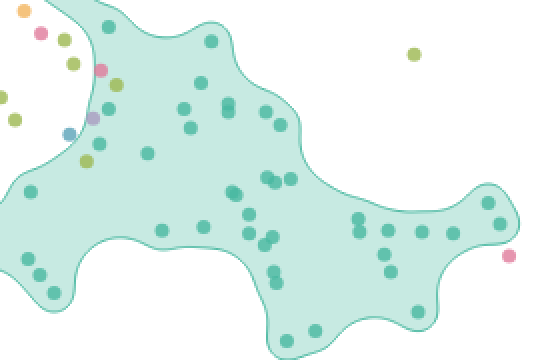
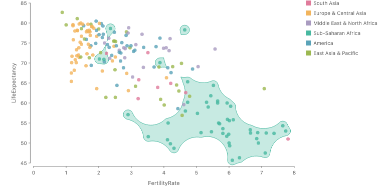
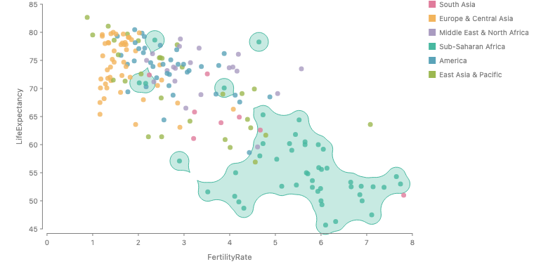
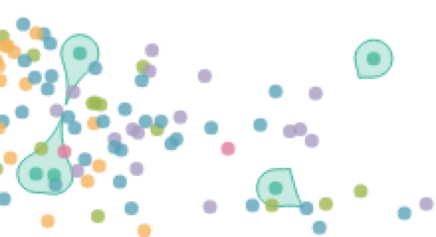
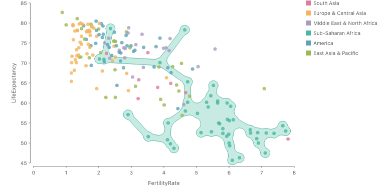
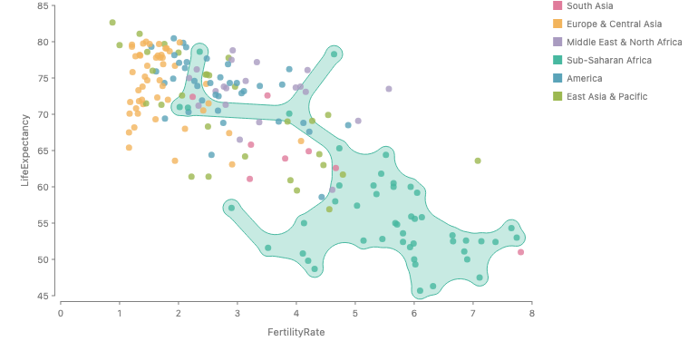
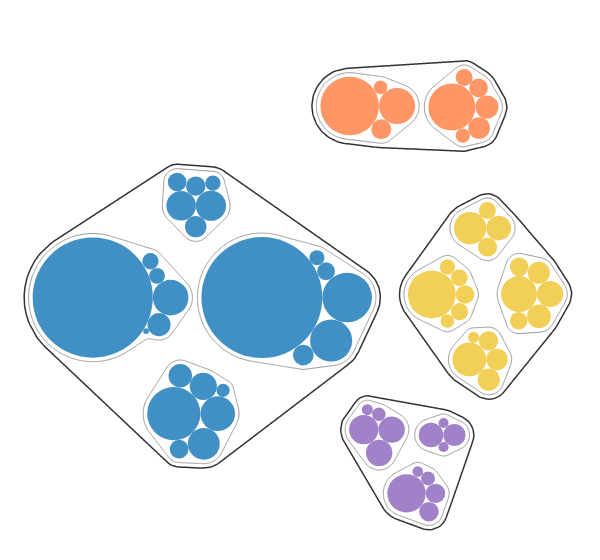

Can blob and arcs be one outline?
The enclose shapes Shape.blob and
Shape.arcs, tried on the ChartAccent chart and the bubble
treemap. Issue
#1247
already asks this question.
Yes, and the merge is principled. Blob fills Delaunay triangles, smallest first. Arcs closes the padded members with a disc of radius r. These are the straight and the curved versions of the same thing: an alpha shape. Blob takes the straight version, so every gap it fills becomes a straight chord, and every link between two dots is a tube as wide as the dots, whose sides are straight lines.
On ChartAccent, arcs alone gives the wavy bubbleset edge in the dense cluster, but the set falls apart into pieces, with sharp cusps where two pieces almost touch. Adding blob's spanning tree as thin links (a 30-line prototype) keeps one piece and keeps the wavy edge. The long links out to far outliers stay straight in every version, because a link of constant width is straight by nature.
Recommendation: one Shape.blob built on the exact
arcs engine, with radius replacing
convexity and roundness, plus a
connected switch. Shape.arcs,
Shape.hull and Shape.spine become exact
presets. One smoothing pass after the closing removes the small bumps
the plain closing leaves (see
Why the prototype has bumps). Five decisions are
listed at the end.
Arcs on the ChartAccent chart
Each panel is the gallery story
ChartAccentSubSaharanAfrica with only the
shape (and in one case padding) changed. The
rest of the spec is at the bottom of the page.

Shape.blob({ convexity: 0.1, neck: 0.6 });
Shape.arcs();
Shape.arcs({ radius: 24 });
// one engine: blob's links fed into the arcs closing
Shape.blob({ radius: 24, connected: true });Why the prototype has bumps
The bumps come from the closing itself, not from
neck (the prototype has none), the links, or a bug. The
rebuilt outline matches the render to 0.007 px, and every concave arc
sits exactly where the closing puts it.
The closing keeps the outline's direction continuous but not its curvature. Where one dot sits a little outside its neighbors, the outline runs along that dot's own padded circle (radius 9.5 px) between two concave arcs of radius 24 px. Curvature jumps by 0.147/px at each join. The bump is only about 0.3 px tall, but the edge swings 20° to 40° the other way over 3 to 6 px, and the eye reads that as a bump. The outline has 52 changes of curvature sign, and 14 of its convex runs turn less than 60°.
The links are not the cause. Without them, the S near the pink dot is
still there. Making links as wide as a dot (the job
neck would do) straightens the links but leaves the four
other bumps alone.
Fix: after the closing, smooth the outline with a Gaussian
along its length (σ = 6 px, the same as padding), then
push the whole outline outward by the smallest amount that puts every
padded dot back inside. Here that amount is 1.9 px, about σ² / (2 ×
dot radius). All five bumps go away, the outline stays one piece,
every dot keeps its padding, and the largest curvature step drops from
0.103 to 0.009. It takes 18 ms instead of 7 ms.




 After
After



// proposed: smoothing is part of the outline, σ derived from padding
enclose({ shape: Shape.blob({ radius: 24 }), padding: 6 });Other fixes tried

The cost of the fix: the outline sits about 1.9 px farther out on
straight runs (7.9 px from the dots instead of 6), and it becomes a 1
px polyline instead of exact arcs. In effect this brings
roundness back as σ. I suggest deriving σ from
padding rather than exposing it. Tested on this chart
only, not yet on the bubble treemap.
Other arcs settings

Shape.arcs({ radius: 40 });
Shape.arcs({ radius: 80 });
enclose({ shape: Shape.arcs({ radius: 24 }), padding: 10 });


neck.
The reverse: blob on the bubble treemap
The same straight-line problem shows up when blob draws the bubble treemap contours. Blob turns the continents into rounded polygons.
bubble(Shape.arcs({ radius: 12 }), Shape.arcs({ radius: 8 }));
bubble(Shape.blob(), Shape.blob());
bubble(
Shape.blob({ convexity: 1, neck: 1 }),
Shape.blob({ convexity: 1, neck: 1 }),
);What each outline computes today
Shape.arcs({ radius = 12 })
The exact morphological closing of the padded members by a disc of
radius, with holes filled. This is the Görtler et al.
2018 bubble treemap contour. It grows each member by padding +
r into exact lines and arcs, keeps the outer boundary of their
union, then shrinks it back by r. Two padded dots join only
when a disc of radius r cannot pass between them, so nothing
guarantees one piece. The one parameter sets both which gaps fill and
how round every inner corner is. There is no avoiding,
holes or neck. Code:
enclose/arcs.ts.
Shape.blob({ convexity = 0.5, holes, roundness, neck, avoiding,
clearance })
KelpFusion style. It fills Delaunay triangles smallest first until
they cover convexity of the convex hull's area, then adds
a minimum spanning tree routed around avoiding, so the
set is always one piece. The pieces are the padded dots, the filled
triangles, and tapered tubes along the links. The union is traced on a
grid, neck pulls the tubes in, and a Gaussian along the
outline rounds the corners while keeping straight runs straight. Code:
enclose/blob.ts (3166 lines).
Why blob draws straight lines
A tube between two padded dots is as wide as the dots, so its sides
are their common tangents, and a row of dots gives one straight edge
with no dip between them. Filled triangles add straight chords.
neck pulls a constant-width tube in by a constant amount,
so it stays straight. The Gaussian rounding is capped near the dot
radius (about 9.5 px here) and leaves straight runs alone on purpose.
Arcs instead dips in with a concave arc wherever a disc of radius
r fits between two dots, which is the bubbleset look.
Three ways to unify
| Design | Spelling | Cost |
|---|---|---|
| 1. One kind on the exact engine (recommended) |
|
convexity and roundness are removed
and call sites migrated. The closing is followed by one
smoothing pass with σ derived from padding, so the outline is
curvature-continuous. Padding is the convex corner radius,
radius the concave one. Deletes the grid tracer and
neck pull from blob.ts. radius is in
pixels, so it does not scale with the data the way
convexity does (see radius 80 above).
|
| 2. Two kinds, one engine |
|
No API break. Blob's roundness becomes an exact
concave closing radius instead of a Gaussian. Fixes the straight
edges, but keeps two names for one space.
|
| 3. Keep them separate |
|
Only worth it if blob's relative convexity and its
topology-preserving rounding are worth keeping. The renders
above argue against it.
|
Cases that really differ
One piece versus many is a real choice, not an artifact of either
engine, so it becomes the explicit connected switch.
avoiding has to cut its keep-out zones after the closing,
which the exact engine can do because the zones are made of lines and
arcs. holes: true means keeping the inner loops that arcs
drops today, a small change. Polygon members (#1207) need a polygon member in either engine.
Decisions for you
- Design 1, 2 or 3. I recommend 1.
-
Pixel
radius, or also a relative value (for example a fraction of the median link length) so it scales with the data likeconvexitydid. - Default radius. 24 looked best on ChartAccent; the bubble treemap uses 12 and 8.
-
connecteddefaults: true forblob, false for thearcspreset. -
newSmoothing: σ derived from
padding(recommended), or its own option. And whether thearcspreset smooths too, which would change the bubble treemap's exact Görtler contour.
Caveats
The prototype is a module-level flag in arcs.ts, not an
option, and lives only in a scratch worktree. Only the ChartAccent
chart and the bubble treemap were rendered. The Penguins, Holes,
Hyperedges and Munkres stories should be checked against the prototype
before a decision, since avoiding and
holes are what those stories test.
The ChartAccent spec
chart(gapminderCountries, {
axes: true,
w: 520,
h: 320,
color: Color.palette(REGION_COLORS),
})
.flow(scatter({ x: "FertilityRate", y: "LifeExpectancy" }))
.mark(circle({ r: 3.5, fill: "Region", opacity: 0.8 }).name("countries"))
.layer(
chart(selectAll("countries"))
.flow(
filter(
(country) => project(country, "Region") === "Sub-Saharan Africa",
),
)
.mark(
enclose({
shape, // the panel's shape
padding: 6,
fill: "#47b8a0",
stroke: "#47b8a0",
fillOpacity: 0.3,
}),
),
)
.render(container);